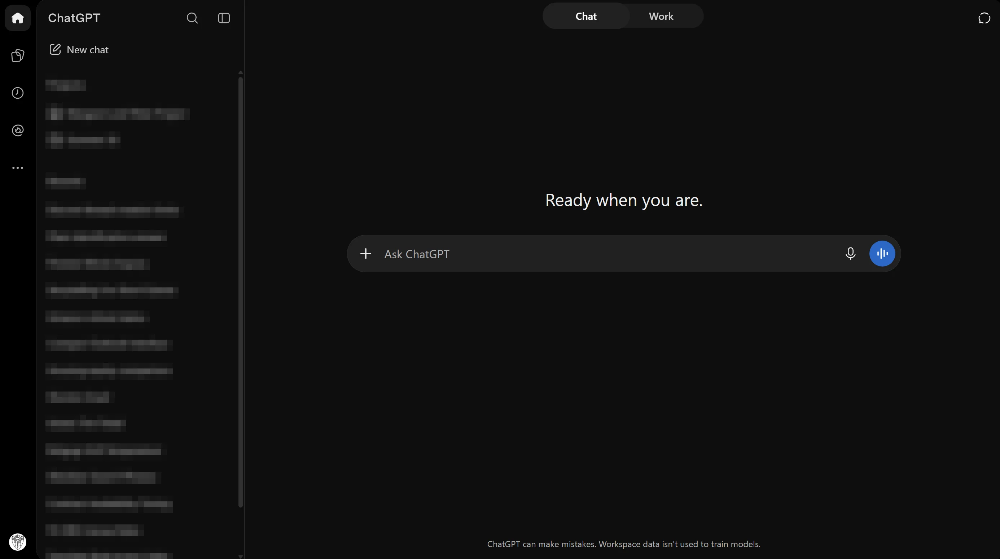
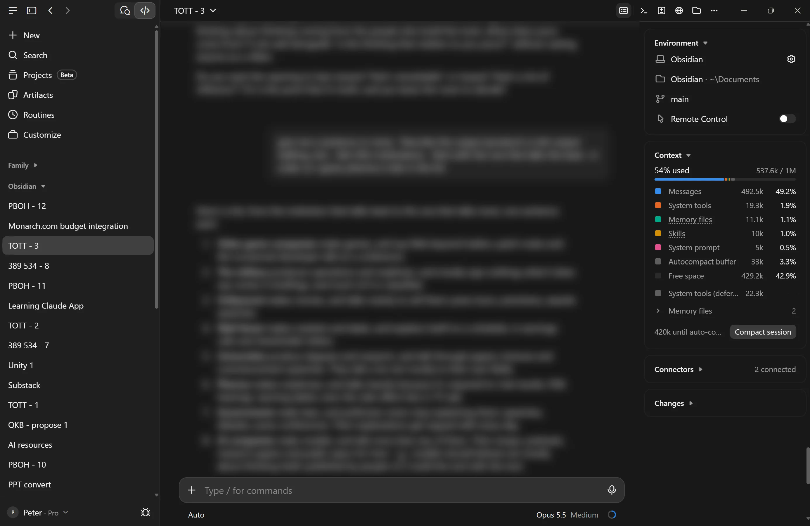
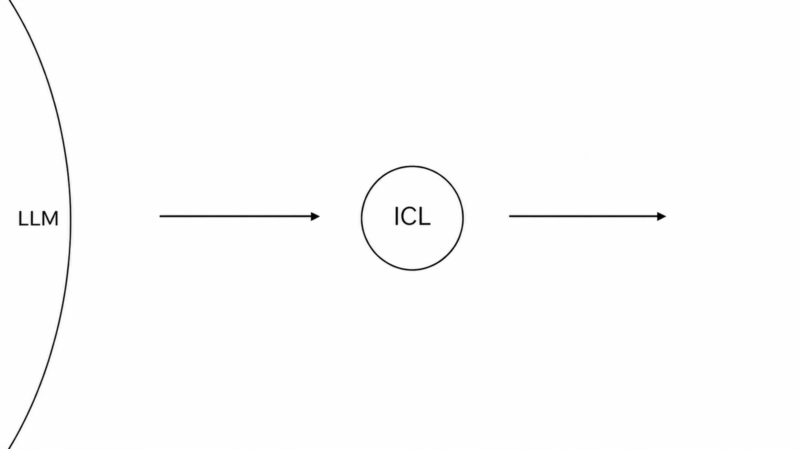
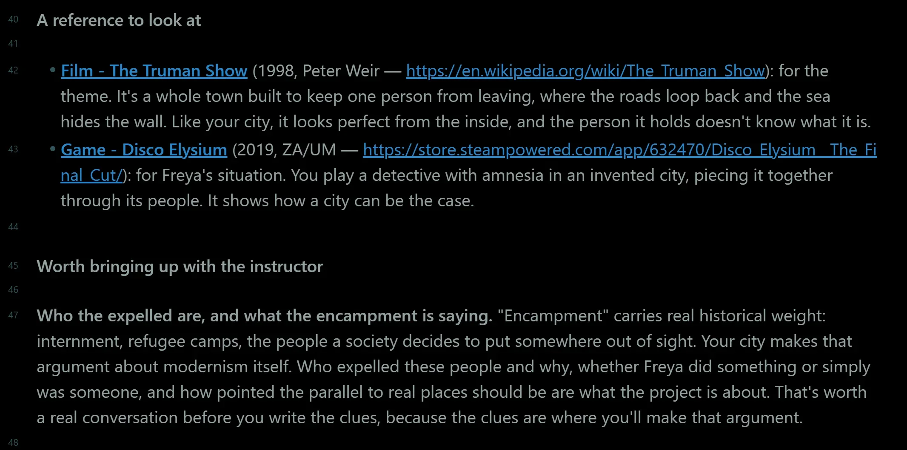
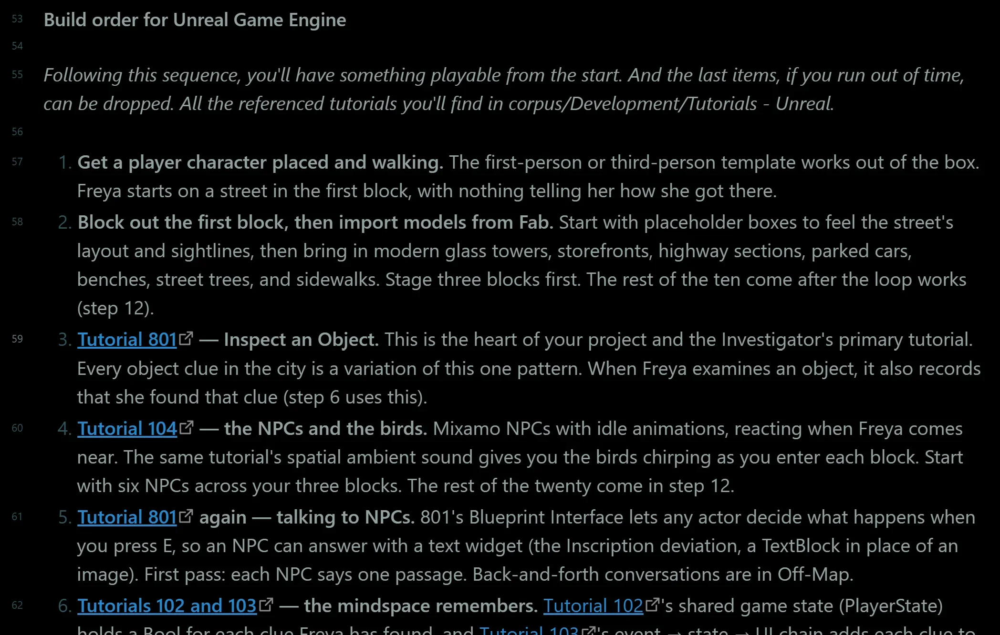
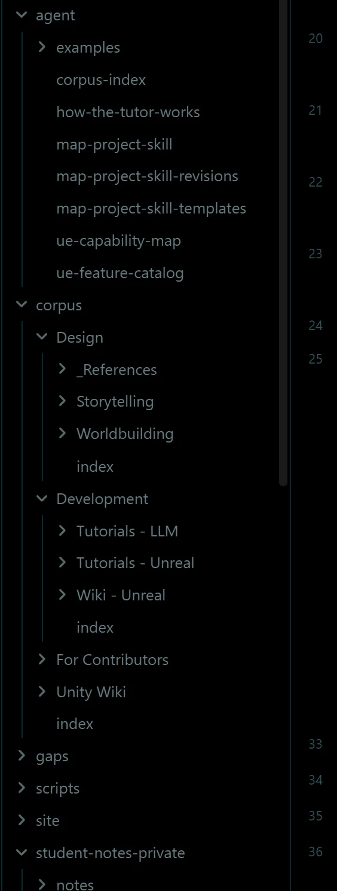
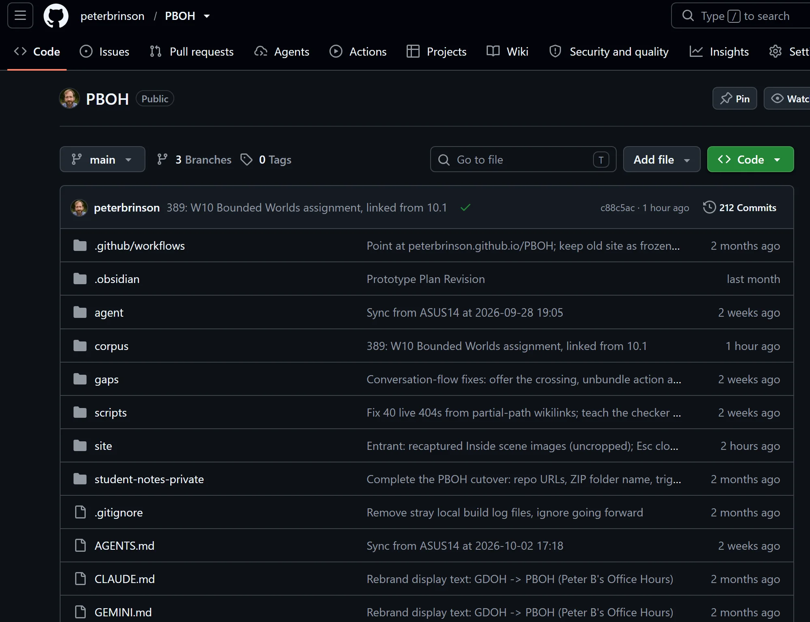

A queryable knowledge base is a folder of plain text files on your own computer that you can ask questions of — your course material, your research, your production notes, your team’s scattered documents, gathered in one place and written so an AI can read all of it. Point any AI at it and it takes on a particular expertise you’ve crafted, for your own use or anyone else’s.
Values
- Anti-black box
- Compel you and your team to think and be creative
Why QKB's and not browser chat


Like when you engineer with LLM’s, QKB’s are persistant workspaces.

When you use ChatGPT or Claude in a browser tab, you rebuild context every time. You paste in the document, explain the project again, remind it what you decided last week. The conversation is where the work lives, and returning to a chat days later can be confusing, is hard to share, and impossible to version.
A knowledge base remedies that. The work lives files you can read and write when you like. The AI is a collaborator you invite in. Walk away from the session, come back in a month, hand the same folder to a colleague.
Terminology: You’ll find “LLM wiki”, “LLM knowledge base”, “Second brain”. Until one name takes the clear lead, Peter likes QKB: queryable knowledge base.
A Review of Queryable Knowledge Bases with Grandma
Part 1: Grandma’s cooking
Imagine a knowledge base of your grandmother’s cooking. As a cook, she’s among the 1% - she is versatile, skilled, and many dishes have stories that come with them, either about your family or a broader cultural connection to her home country. You want to capture her recipes, but more importantly, how she cooks…before she gets much older. You want to cook like her in order to feed your big family at holidays.
There are considerations. Some ingredients are hard to find in your town. Next, in your extended family, some folks have allergies; some in-laws aren’t fond of certain animal parts. And you have your own preferences and skills. Ultimately, you want to reproduce her cooking and also - this is big - you want to hand it on to your siblings and cousins, in a form they can build their own relationship with.
As an example, this domain is narrow enough that OpenAI or Anthropic will never train it into their models. A QKB is the next best thing.(The advanced alternative would be training an open-source LLM on the material. But that is hard and it is unnecessary).
Part 2: Fundamentals (terms)
Seven ideas.
Markdown — plain text files ending in
.md, with a couple of formatting conventions for headings and links. Readable in any text editor, on any machine.Frontmatter — a short block of labels at the top of a markdown file. It helps you and an AI find and sort files without opening them all.
A persistent workspace — a folder on disk that both you and an AI return to. Like a Unity or Unreal project, it persists across sessions and collaborators, but for documents instead of game assets.
Command line interface, CLI — an AI tool that works inside a folder, reading your files, writing new ones, and checking its own work. Claude Code, Codex, and Antigravity are the current ones, each in a terminal version and a desktop version.
In-context learning — the AI learns from what you place in front of it, live, in the moment. In chat you give it a sentence or two of context; with a knowledge base you can give it 100,000.
Context engineering — the craft of arranging files so an AI finds what matters without being told every time. Indexes, naming, and a note at the root that explains the folder.
Obsidian — a free text editor for markdown files that shows your folders in a sidebar, the way VS Code does for a codebase. A “vault” is just a folder.
And: Git and GitHub, which make a knowledge base versioned and shareable.
Part 3: Grandma’s cooking again, but with terms
Back to your grandmother’s cooking, now with terms in hand.
Her recipes, and how she cooks them, go into markdown files: one per dish, each with the story that comes with it, about your family or about her home country. Frontmatter at the top of each file tags it by occasion, by ingredient, and by who can’t eat it. You read and write them in Obsidian; together the files are a vault.
Open the folder with a CLI tool like Claude Code or Codex and it becomes a persistent workspace.
Then you and the AI practice the context engineering that makes it answer back. Content: her dishes, plus what she does when an ingredient can’t be found. Indexes: a short list in each folder of what’s inside, so the AI opens the right handful of dishes instead of all of them. Instructions: a note the AI reads first, with your family’s allergies, what the in-laws won’t eat, and your own skills and preferences.
Ask “what can I make for twelve this weekend that my cousin with the nut allergy can eat?” and in-context learning is what happens next: it reads her dishes, your instructions about the allergy, and her notes on substitutions, and learns from them right then, for this one question.
When you cook again, everything you did and learned last time is still there, because it’s written down in the folder.
Then the big part: hand it on. Put the folder on GitHub and each sibling and cousin makes their own copy to add their own notes and nuances. GitHub “diff” can then show relatives, side by side, everyone’s edits and influences.
Peter B's Office Hours


Here’s a QKB at work. A student brings an idea to PB Office Hours and leaves with a Prototype Plan written to them.
PBOH makes use of context engineering therefore it has three kinds of files:
- Instructions: files the AI reads, telling it who to be, how to talk, and where to look before it answers.
- Content: Unreal tutorials, a Blueprint wiki, a game narrative framework, and pages on games and films to use as references.
- Indexes: lists that let the AI find the content related to the current conversation without filling up its context window.
About 345 markdown files and 150,000 words, roughly the length of two novels.
Part Files Words Share Instructions 28 37,500 25% Content 293 97,000 65% Indexes 24 15,500 10%
Back to Richard, Part 3
Tutorials, multiple
For your team - time for you to invent a powerful QKB practice we haven't thought of!


Imagine a queryable knowledge base that is a collection of your project’s notes, plans, and research, organized so you can ask an AI questions like, “What confused players in our last three playtests?” or “Why did we decide to cut that feature?” All files stay available for you to read, revise, and share as the project grows, which gives future conversations a shared starting point.